最近 Claude Code 上线了一个新命令：/loop ，它能让 AI 按你设定的时间间隔，自动重复执行任务。
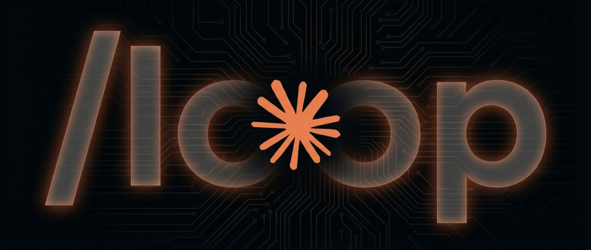
回想起之前用 Claude Code，每次都是我拨一下，它转一下。从来没试过让它自己在后台执行重复任务。
而新出的这个命令直接满足了我的愿望，一个能随时陪我干活的 AI 值班助理
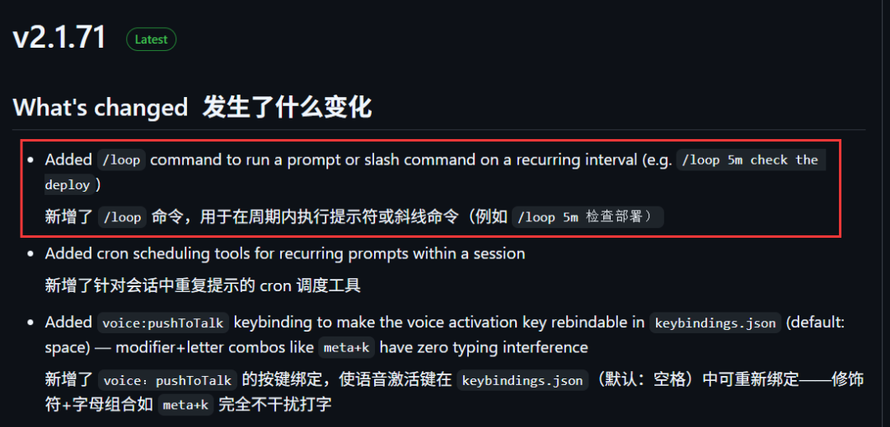
先说下门槛。你必须把 Claude Code CLI 升级到 v2.1.71 或更高版本。
如果低于这个版本，只需输入：loopclaude update就能更新，不用经过npm。
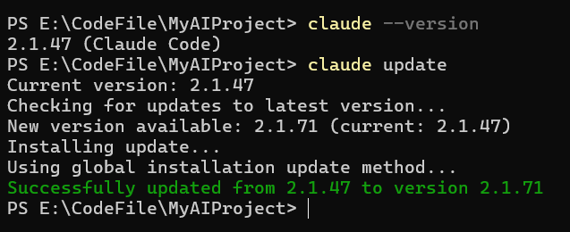
光介绍功能大家可以无法get到它的具体玩法，下面我准备了几个自动化任务，看看它的效果到底如何。
任务实测
在开始折腾之前，我得先提醒一句：/loop 里的提示词就是整个任务的灵魂。因为它会在后台不断循环，如果你写得精准清晰，它就是一个任劳任怨、极其靠谱的牛马；但如果你写得模棱两可，那它就会变成一台疯狂消耗你 Token 的“吞金兽”。
所以，指令一定要明确。下面咱们从简到难，实操几个玩法：
玩法一：定时文本生成
先来个超级简单的文本生成任务热热身。
这个命令用起来非常简单，只需在任务前面加上“/loop”。
提示词：
/loop 每一分钟讲一个笑话
发送之后 Claude Code 就立马调用 CronCreate 创建定时任务，每隔一分钟自动跑一次。
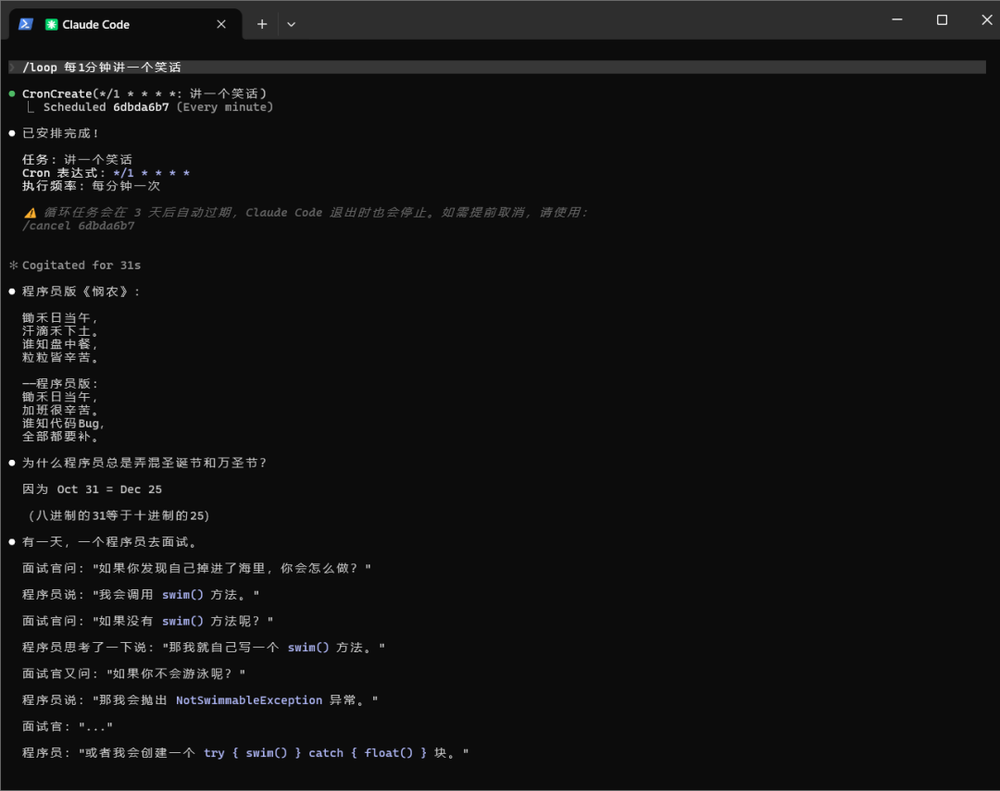
亦或者 Vibe Coding 时再开个窗口，输入一句：
提示词：
/loop 每隔1分钟提醒喝水，但每次措辞不一样，有时严肃有时整活
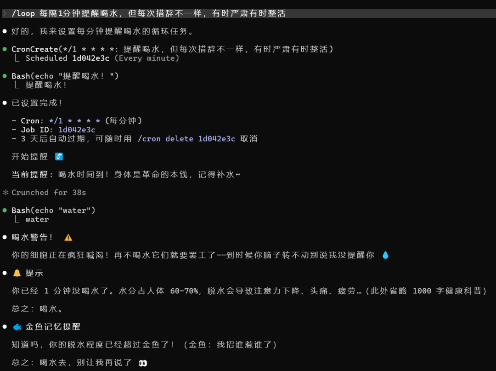
这里有个细节要注意：
时间间隔支持 s（秒）、m（分钟）、h（小时）、d（天）四种单位。但因为底层是 cron，最小粒度就是 1 分钟，所以“秒”会被自动向上取整到分钟。
不写时间间隔也可以，默认每 10 分钟跑一次。想取消的话，直接告诉它“结束当前任务”就行。
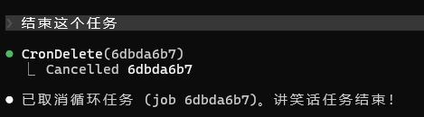
玩法二：定时获取第三方项目信息
这个就有点意思了。
平时咱们关注某个开源神作，或者盯竞品的涨粉情况，总得时不时手动刷新页面看涨了多少 Stars。现在有了 /loop，你可以直接让它变成一个无情的“数据监控器”，帮你定时去后台抓取数据。
提示词：
/loop 1分钟 发送openclaw这个开源项目的stars
运行之后，每隔一分钟，Claude Code 就会自动调用 GitHub API 拉取实时数据，然后输出到控制台 👇
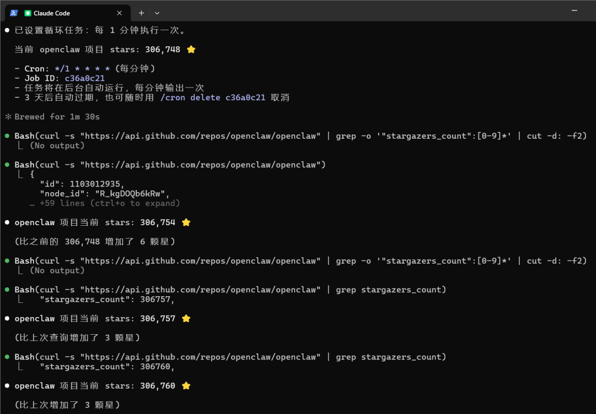
得益于 Github 的开放性，你不仅能定时获取项目的 stars，还能实时监控项目的版本更新和 Issue 趋势。
而且 GitHub 在 API 调用上可以说相当豪爽。匿名调用每小时 60 次，正好配得上 cron 最小 1 分钟的粒度。
玩法三：一次性任务
虽然 loop 是循环的意思，但做定时的一次性任务也极其好用。
比如你在 Vibe Coding 沉浸式创作时，临时有个待办事项，又懒得切出去定闹钟又怕忘，现在你可以直接发个消息：
提示词：
/loop 今晚6点提醒我去吃饭
剩下的，就是继续安心 Vibe Coding。
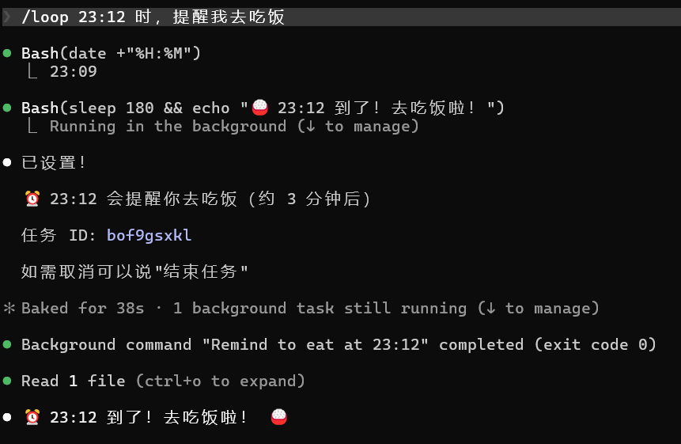
除了上面这些基础操作，/loop 在真实的业务开发中，还有很多隐藏玩法，比如定时检查部署是否完成、定时运行测试套件并报告、定时扫描错误日志并为可修复的漏洞创建PR。
要说 /loop 最猛的地方就在于能直接调用 Claude Code 的其他“/” 命令，比如定时跑“/review-pr”审查代码。相当于给原本单次的强力技能加上了“连发”，自动化上限直接拉满。
除此之外你还能开启影分身之术，像 OpenClaw 等工具主打的多实例运行，Claude Code 同样能做到。
你只需多开几个终端窗口指向不同项目，并在启动时加上跳过权限确认命令，就能让它们各自静默跑不同的 /loop。唯一要注意的就是你的钱包
既然赛博牛马们都在后台静默干活了，咱们总不能还要挨个切窗口去“监工”吧？这就引出了另一个刚需：怎么才能更方便、直观地看到任务进度？
自动消息推送：让任务结果主动来找你
loop 命令好用是好用，但如果只能在 Claude Code 中通知，那我觉得还是太局限了。毕竟我们不可能无时无刻盯着屏幕上那黑乎乎的终端界面，
所以我们需要找个方法，打通最后一关：实现从干活到通知。
我想到的解法是：接入飞书机器人。
飞书有个 Webhook 功能，可以让外部服务往群里推消息。整个配置过程非常简单，这几天大家看 Openclaw 的部署教程都会提到这个。
首先在飞书里建个群，加一个自定义机器人，拿到 Webhook 地址，然后把地址塞进提示词里就行了。
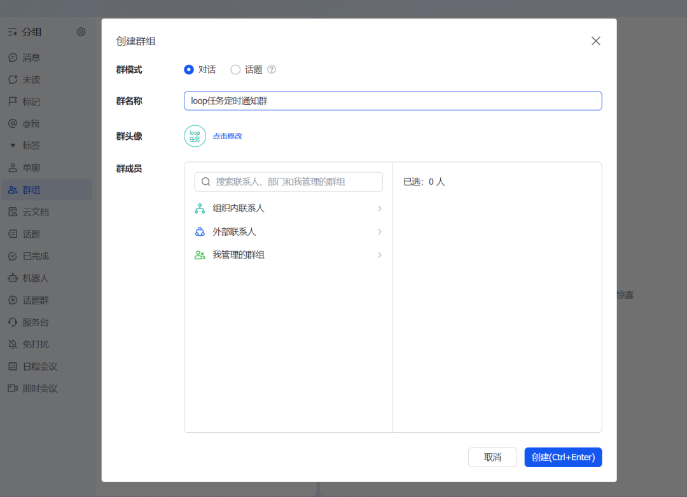
这个机器人可以通过 Webhook 将自定义服务的消息推送到飞书。
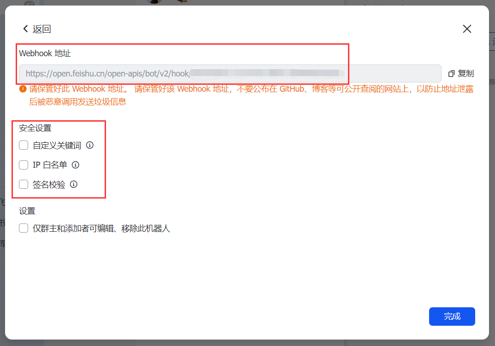
比如我把之前监控 GitHub 的任务升了个级，改成监控 Claude Code 本身的 Releases 更新，有新版本就直接推飞书卡片。
我们直接把下面这段提示词发给 Claude Code，吧 webhook 地址替换成你自己的。
提示词：
/loop 每30分钟检查一下 https://github.com/anthropics/claude-code 的 releases，如果有比当前记录更新的版本，就以飞书卡片形式推送到群里，并附上 changelog。我的 webhook 地址是：https://open.feishu.cn/open-apis/bot/v2/hook/##########
Claude Code 接到这个任务之后，就会自己去检索项目、找到对应API、记录当前版本号、制定cron任务，全自动完成。
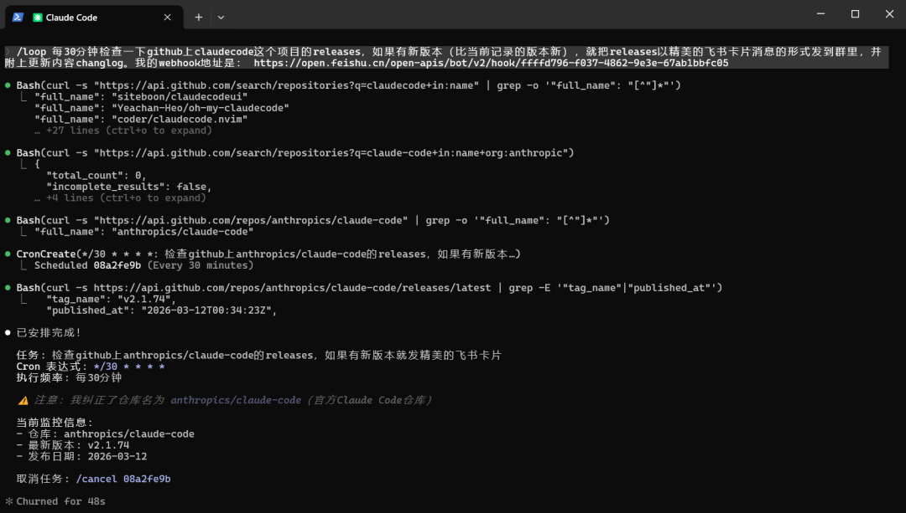
有版本更新的时候，它就会直接在飞书群里推送消息，附带changelog，既清晰又方便，比盯着终端黑框框舒服多了。
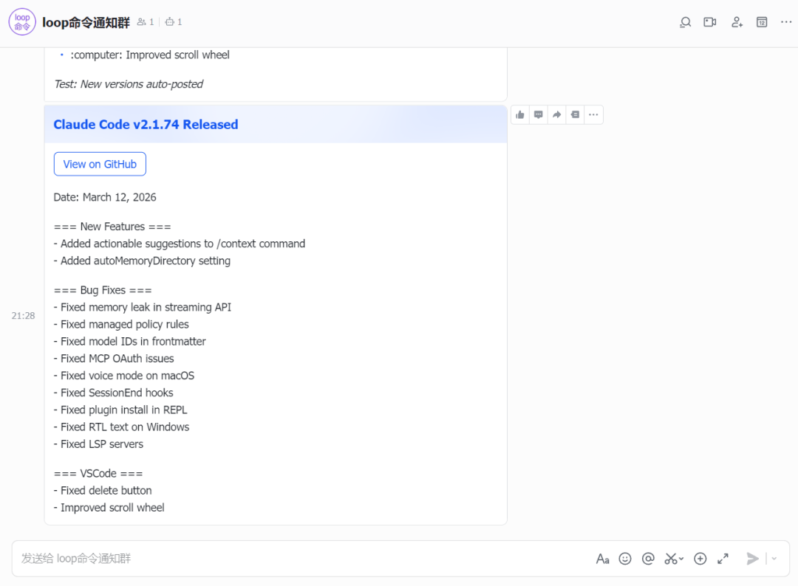
最重要的是，你所有的 loop 任务都可以用这个套路推送到飞书。
展示完 /loop 的几个玩法后，咱们回到到这个 loop 命令本身。
其实说白了，它的底层就是一个 cron 调度器。
懂开发的朋友知道 cron 是啥，就是 Linux 里那个定时任务系统，让你设定每天早上9点干某件事。以前你要自己写一行像摩斯密码一样的表达式，现在全免了，你说大白话，Claude 帮你翻译 
它的底层有三个原生工具在跑：CronCreate、CronDelete、CronList。每个任务会分配一个8位ID，随时可以叫停。
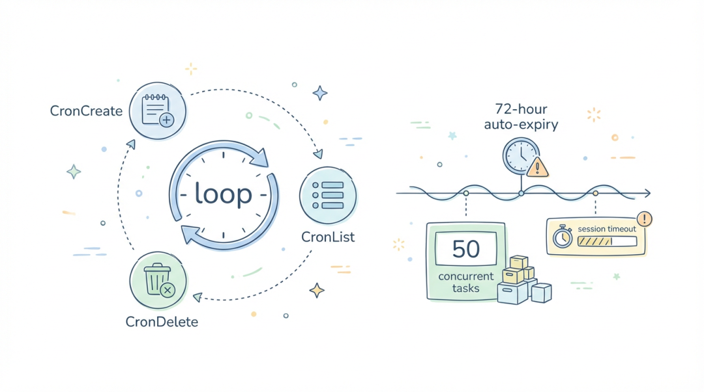
所以你不需要懂语法，也不用配环境，AI 在忙的时候，定时任务会等到当前轮次结束再触发，不会打断你正在进行的对话。
不过莫理用下来，也发现了几个限制：
1、每个 session 最多支持 50个并发任务
2、时区用的是我们本地时区不是UTC
3、任务会在 session 关闭后消失，不会持久化到磁盘。
4、还有一个“安全”限制，所有任务会在72小时后自动过期，过期前会最后执行一次然后删除。
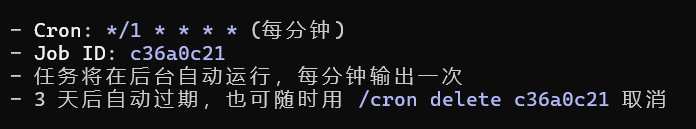
这样能防止无限制的自主运行，有点像给AI装了个自动断电的开关。毕竟玩这玩意就相当于烧钱
你要是想搞长期的定时任务，莫理还是建议你用 Desktop 的 Scheduled Tasks 或者 GitHub Actions。
或者每次手动启动下 loop 任务。
写到最后
对于咱们开发者来说，在终端里写代码、做项目监控、跑测试，Claude Code 的 /loop 绝对是目前最自然、最顺手的选择。
不仅免去了繁琐的配置，还完美融入了现有的开发工作流。这也是 Claude Code 从“被动工具”走向“主动助手”的关键一步。
但客观来讲，如果你面临的场景是极其复杂的跨平台消息通知，或者纯粹的“非技术类”自动化办公任务，那像 OpenClaw 这类专门的 Agent 工具仍然更合适 
▽▽▽